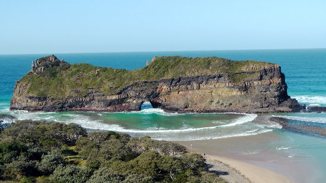
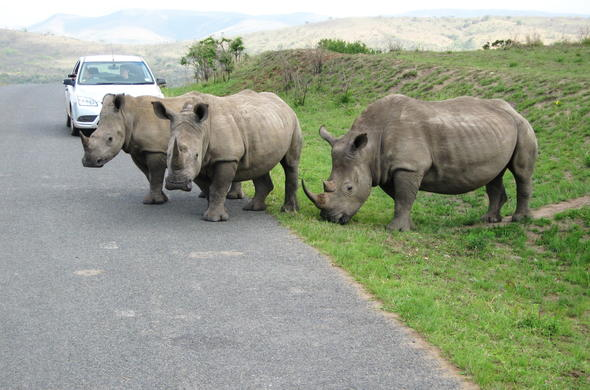
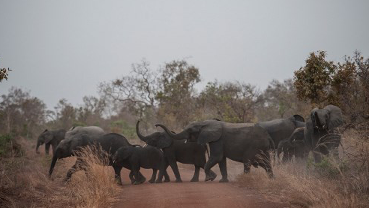
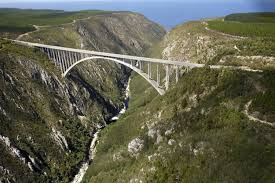
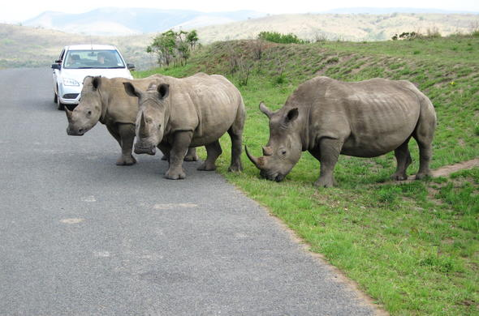
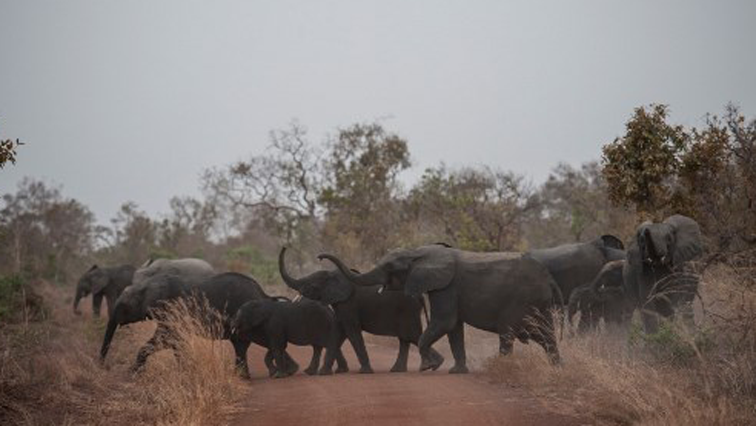
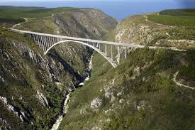

Eastern Cape

The landscape is extremely diverse. The western interior is largely arid Karoo, while the east is well-watered and green. The Eastern Cape offers a wide array of attractions, including 800 kilometres (500 mi) of untouched and pristine coastline along with some particularly splendid beaches, and "big-five" viewing in a malaria-free environment. The Addo Elephant National Park, situated 73 kilometres (45 mi) from Port Elizabeth, was proclaimed in 1931. Its 743 km² offers sanctuary to 170 elephants, 400 Cape buffalo and 21 black rhino of the very scarce Kenyan sub-species.The province is the location of Tiffindell, South Africa's only snow skiing resort, which is situated near the hamlet of Rhodes in the Southern Drakensberg. It is on the slopes of Ben Macdhui, the highest mountain peak in the Eastern Cape (3001 m). The National Arts Festival, held annually in Grahamstown, is Africa's largest cultural event, offering a choice of the very best of both indigenous and imported talent. Every year for 11 days the town's population almost doubles, as over 50,000 people flock to the region for a feast of arts, crafts, music and sheer entertainment. Jeffreys Bay is an area with some of the country's wildest coastline, which is backed by some of Africa's most spectacular sub-tropical rainforest. The waters here are noted for having "supertubes", good waves for surfing. Aliwal North, lying on an agricultural plateau on the southern bank of the Orange River, is a popular inland resort known for its hot springs. The rugged and unspoilt Wild Coast is a place of spectacular scenery. The coastal areas have been a graveyard for many vessels. Whittlesea, Eastern Cape, situated in the Amatola Mountains, is known for the first wine estate in the province.


 





Click here for more info on the Eastern Cape